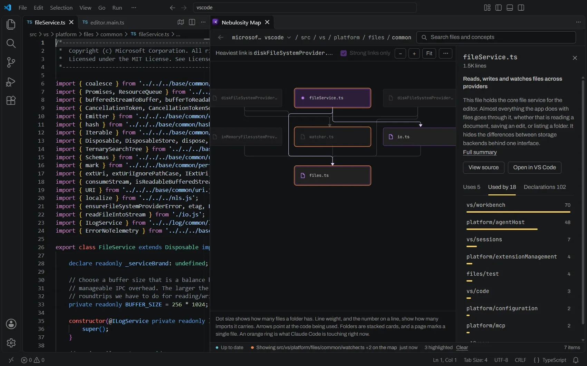
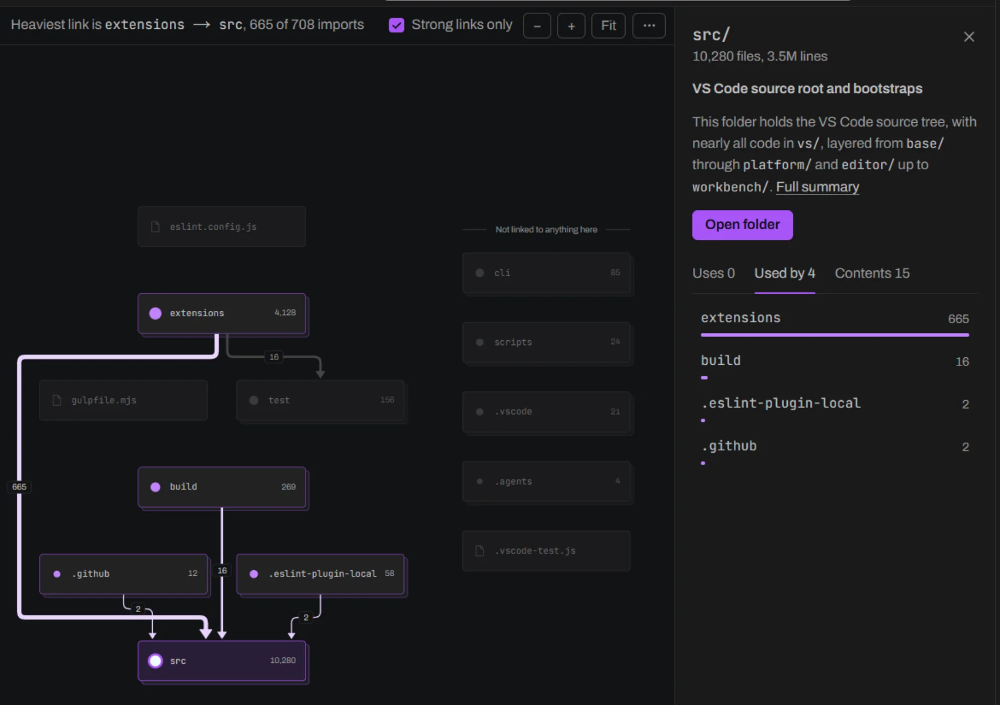
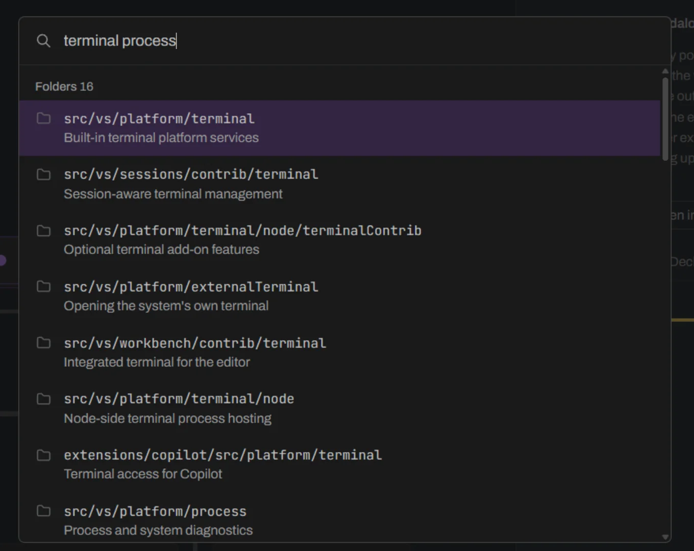

Nebulosity for VS Code
A live map of your codebase beside your code, for you and Claude Code. It follows the file you have open and shows what it imports and what imports it.
With it, Claude Code answered multi-file questions up to 4.4× faster in tests, and up to 3.7×* faster on Theia, a codebase Nebulosity was never adjusted for. Every answer was right.
- Publisher
- andrewl746
- Needs
npm install -g nebulosity- Reads
- TypeScript, JavaScript, Python, Go, Java, C# and Rust
- License
- MIT, free and open source
VS Code with editor.main.ts open. The Map beside it shows what that file imports, heaviest first.

The Map, in a panel beside your code
It takes its colors from your VS Code theme, so it reads like part of the editor.
It follows the file you have open
Switch files and the Map moves to that file's folder, with lines to what it imports and everything else faded. When Claude Code uses Nebulosity's tools, the boxes it touches ring in orange.

Click a box to see what it uses
Its summary, then what it imports, heaviest first. A line's weight is how many imports it carries.


Search by what code does
Ctrl K finds files and folders by name, and by what they do once AI summaries are written.


Tested against Claude Code on its own
The same questions, with and without Nebulosity, on three large TypeScript codebases. 378 runs, each checked against a reference answer.
- What could changing this file affect?
- How does this entry point end up loading that file?
- Which entry points end up loading this file?
- Which files depend on this one, directly or not?
- Is this file part of an import cycle?
In the main test, 42 of 42 answers to these questions were fully right with Nebulosity, and 29 of 42 alone.
Medians of 6 runs per setup on VS Code and AFFiNE together, 3 on Theia. The question types were grouped after the runs, and simpler ones, like listing a file's direct importers, came out about even. Read the full evaluation
* Theia's 3.7×, for what a change could affect, was measured later (26 October 2026) with the same setup. 3 of 3 answers were fully right with Nebulosity, 0 of 3 alone.
Install
In VS Code
Install the package
npm install -g nebulosity
Index your repo from its root folder, free
nebulosity index .
Install the extension or from the Marketplace
code --install-extension andrewl746.nebulosity-vscode
Open the Map
Nebulosity: Show MapCommand Palette
Or open it in a browser after steps 1 and 2, at localhost:3000
nebulosity map
Node 24 or later and git. Without an API key, none of your code leaves your machine.
Then connect Claude Code
nebulosity setup
- What could break if
src/vs/base/common/event.tschanges? - How does
main.tsend up loadingterminal.ts? - Are there import cycles in
src/vs/platform?
Claude Code 2.1.300 or later, run in the same folder. It uses Nebulosity's tools when they help, and can point at its answer on the Map. If something seems off, nebulosity doctor says what's missing, and the guide has every command.